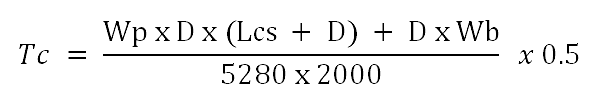

All types of ton-mile service should be calculated and recorded in order to obtain a true picture
of the total service received from the rotary drilling line.
These include :
RTTM = round trip ton-miles
Wp = buoyed weight of drill pipe (lb/ft)
D = depth of hole (ft)
Lp = length of one stand of drill pipe (ave) (ft)
Wb = weight of traveling block assembly (lb)
Wc = buoyed weight of drill collars in mud minus the buoyed weight of the
same length of drill pipe (lb)
2000 = number of pounds in one ton
5280 = number of feet in one mile
Case :
Mud weight
=
ppg
Measured depth
=
ft
Drill pipe weight
=
lb/ft
Drill collar weight
=
lb/ft
Drill collar length
=
ft
Traveling block assembly =
lb
Average length of one stand =
ft (double)
a. Buoyancy factor :
b. Buoyed weight of drill pipe in mud (b/ft) (Wp):
c. Buoyed weight of drill collars in mud minus the buoyed weight of the
same length of drill pipe (lb) (Wc):
Round Trip Ton - Miles
Drilling or “Connection” ton-miles
The ton-miles work performed in drilling operations is expressed in terms of work performed in making round
trips.
These are the actual ton-miles of work in drilling down the length of a section of pipe
(usually approximately 30 ft) plus picking up, connecting, and starting to drill with the next section.
To determine connection or drilling ton-miles,
take 3 times (ton-miles for current round trip minus ton-miles for previous round trip):
Where ;
Td = drilling or “connection” ton-miles
T2 = ton-miles for one round trip — depth where drilling stopped before
coming out of hole
T1 = ton-miles for one round trip — depth where drilling started
Case :
Ton-miles for trip @ 4600 ft =
Ton-miles for trip @ 4000 ft =
Ton-miles during coring operations
The ton-miles of work performed in coring operations,
as for drilling operations is expressed in terms of work performed in making round trips.
To determine ton-miles while coring, take 2 times ton-miles for one round trip at the depth
where coring stopped minus ton-miles for one round trip at the depth where coring began ;
Where ;
Tc = ton-miles while coring
T4 = ton-miles for one round trip — depth where coring stopped before
coming out of hole
T3 = ton-miles for one round trip — depth where coring started after going
in hole
Ton-miles setting casing
The calculations of the ton-miles for the operation of setting casing should be determined as for drill
pipe,
but with the buoyed weight of the casing being used, and with the result being multiplied by one-half,
because setting casing is a one-way (1/2 round trip) operation.
Ton-miles for setting casing can be determined from the following formula :

Where ;
Tc = ton-miles setting casing
Wp = buoyed weight of casing (lb/ft)
Lcs = length of one joint of casing (ft)
Wb = weight of traveling block assembly (lb)
Ton-miles while making short trip
The ton-miles of work performed in short trip operations as for drilling and coring operations,
is also expressed in terms of round trips.
Analysis shows that the ton-miles of work done in making a short trip is equal to
the difference in round trip ton-miles for the two depths in question.
Where ;
Tst = ton-miles for short trip
T6 = ton-miles for one round trip at the deeper depth, the depth of the
bit before starting the short trip
T5 = ton-miles for one round trip at the shallower depth, the depth that
the bit is pulled up to